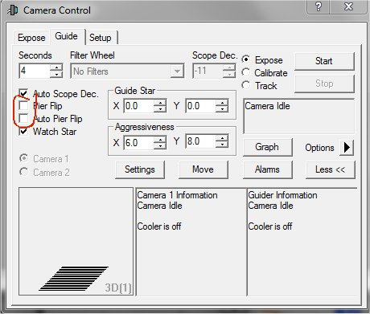
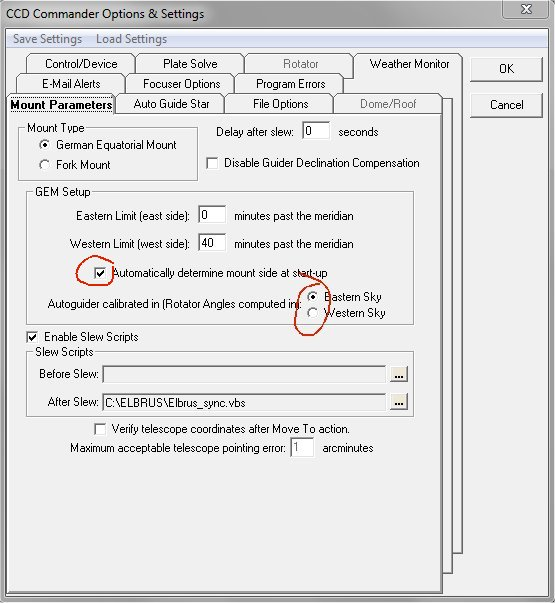

|
Autoguiado con MaximDL y CCD Commander |
||
|
|
||
Suele ser habitual leer que el tema de autoguiado y el hecho de realizar el Meridian Flip son incompatibles o que deja de funcionar el autoguiado. ¡Os aseguro que funciona!
El origen del problema es que CCD Commander y MaximDL son muy "mandones" y los dos quieren tener el control de las mismas cosas ... y esto no nos lleva a buen puerto. Si usamos CCD Commander, debemos configurar CCD Commander para que sea él quien lleve el control y quien diga a MaximDL cómo debe comportarse.
En lo relativo al Meridian Flip, debemos configurar MaximDL para que no controle estos aspectos, desmarcando las dos casillas que se indican en la siguiente imagen:

Eso si, a CCD Commander debemos permitirle que determine de manera automática en qué lado está del meridiano cuando se inicia (información que suelen proporcionar directamente las monturas), y lo que es incluso tan importante como lo primero, indicarle qué zona del cielo se utilizó para realizar la calibración del autoguiado en MaximDL. Es decir, que si utilizamos estrellas situadas al este del meridiano marcaremos Eastern Sky y si eran de la zona oeste marcaremos Western Sky. Para ello en CCD Commander marcaremos las casillas que se indican en la siguiente captura:

Si hacéis estos ajustes en vuestra configuración os aseguro que no tendréis problemas con los autoguiados y los cambios de meridiano.
Espero que os sea de utilidad.